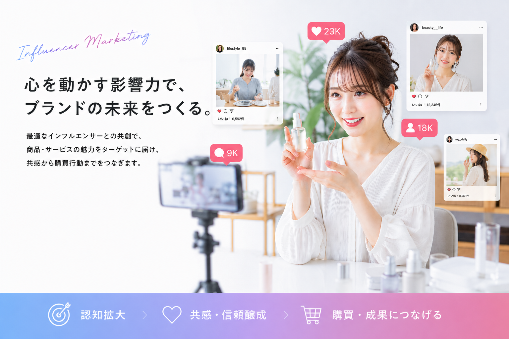

01
TikTok・Instagramを中心に、商品の認知拡大から売上創出までを一貫して支援
INFLUENCER MARKETING SERVICE
TikTok・Instagramを中心に、影響力あるインフルエンサーを活用したPR支援を提供します。企業とクリエイターの間に入り、企画から投稿まで実行します。

1. サービス概要
SNS上で影響力のあるインフルエンサーを活用し、認知拡大から購買訴求まで支援します。単なる投稿依頼ではなく、成果に近い導線設計を重視します。
TikTok・Instagramを中心に、商品の認知拡大から売上創出までを一貫して支援
単なる投稿依頼ではなく、成果に直結するプロモーション導線を設計
フォロワー100万人規模のインフルエンサー起用で、短期間で大きな認知拡大を狙える
2. インフルエンサーご紹介
資料掲載の代表例を、縦スライドで順に閲覧できる構成にしています。
Creator / Men's lifestyle
総フォロワー数 約110万人
Creator / Beauty & fashion
総フォロワー数 60万人
3. サービスの流れ
日程確認、PR内容の詳細、企業様の要望をヒアリングします。
撮影要件や構成を整理し、制作に必要な条件を揃えます。
インフルエンサーが商材や世界観に沿って撮影・制作を進行します。
企業様と投稿内容を確認し、必要に応じて表現や訴求を調整します。
SNSへ投稿し、認知拡大から購買訴求までつなげます。
TikTokは最低30万円から、Instagramは最低15万円から対応可能です。
一般相場の目安は、各SNSフォロワー数 × 1.0円〜1.5円 + 仲介手数料20%です。
4. 御社のメリット
インフルエンサー個人の発信として紹介するため、ユーザーに自然に届き、購買意欲を高めやすい施策になります。
認知拡大だけでなく、興味喚起から購買までの導線を設計し、売上に近い地点まで支援できます。
比較的低コストで始められるため、小さく検証しながら継続判断しやすい点が強みです。
一般相場を踏まえつつ、関係性を活かした柔軟な起用相談が可能です。
美容、ファッション、ライフスタイル、トラベル領域を中心に、貴社商材とターゲットに合う起用案をご提案します。